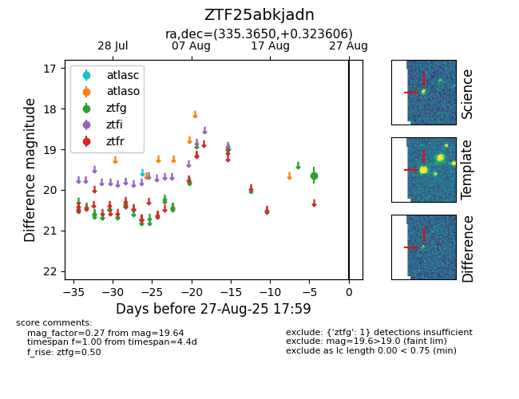

Target ZTF25abkjadn at 2025-08-27 17:59, see:
FINK: fink-portal.org/ZTF25abkjadn
Lasair: lasair-ztf.lsst.ac.uk/objects/ZTF25abkjadn
ALeRCE: alerce.online/object/ZTF25abkjadn
alt names
ZTF25abkjadn (ztf,fink)
coordinates:
equatorial (ra, dec) = (335.3650,+0.32361)
galactic (l, b) = (64.0062,-44.71175)
photometry
last ztfg=19.64
1 ztfg detections
